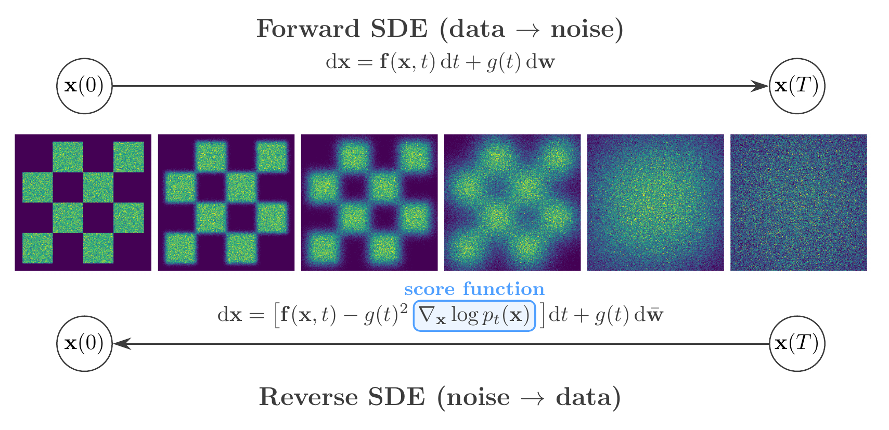
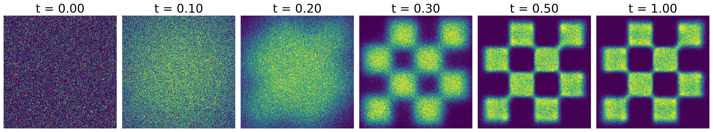
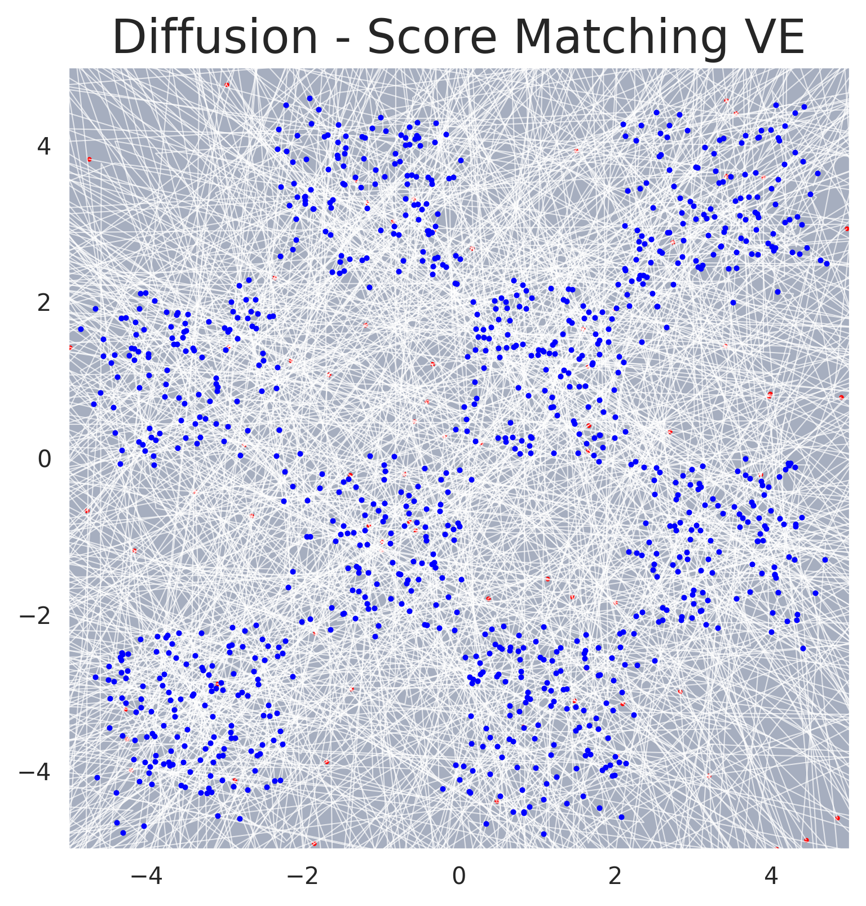

Score-Based Generative Models#
Based on the article Score-Based Generative Modeling through Stochastic Differential Equations (Song et al., 2021).
Score-based generative models generate data by learning to reverse a noise-corruption process. The idea, introduced by Sohl-Dickstein et al. (2015) and refined by Song and Ermon (2019), is to define a forward process that gradually transforms a data sample into unstructured noise, and then train a neural network to undo each step of that transformation. Song et al. (2021) placed both earlier formulations — denoising diffusion probabilistic models (DDPM, Ho et al., 2020) and score matching with Langevin dynamics (SMLD) — within a single continuous-time framework based on stochastic differential equations (SDEs). This unified perspective is the mathematical foundation of GenSBI’s ScoreMatchingMethod.
{kind=link}

Score-based generative modeling. Top: the forward SDE progressively corrupts data into noise. Bottom: the reverse-time SDE recovers data from noise, guided by the learned score function \(\nabla_{\mathbf{x}} \log p_t(\mathbf{x})\).#
Forward Diffusion as an SDE#
The forward process perturbs a data point \(\mathbf{x}(0) \sim p_\mathrm{data}\) by adding noise according to an Itô SDE:
where \(\mathbf{f}(\mathbf{x},t)\) is a vector-valued drift coefficient, \(g(t)\) is a scalar diffusion coefficient controlling the noise intensity, and \(\mathbf{w}\) denotes a standard Wiener process. The coefficients are chosen so that the marginal distribution \(p_t(\mathbf{x})\) transitions smoothly from the data distribution \(p_0 = p_\mathrm{data}\) to a tractable prior \(p_T \approx \mathcal{N}(0, I)\). Two canonical choices exist:
Variance Preserving (VP) SDE: \(\mathrm{d}\mathbf{x} = -\tfrac{1}{2}\beta(t)\,\mathbf{x}\,\mathrm{d}t + \sqrt{\beta(t)}\,\mathrm{d}\mathbf{w}\), where \(\beta(t)\) is a noise schedule. The linear drift drives the mean toward zero while the diffusion injects noise, keeping the total variance bounded at one. DDPM corresponds to a discrete-time approximation of this SDE.
Variance Exploding (VE) SDE: \(\mathrm{d}\mathbf{x} = \sqrt{\frac{\mathrm{d}[\sigma^2(t)]}{\mathrm{d}t}}\,\mathrm{d}\mathbf{w}\), where \(\sigma(t)\) is an increasing noise level. The drift is zero, so noise accumulates without bound. SMLD corresponds to a discrete-time approximation.
In both cases, once the number of discrete noise levels is taken to infinity, DDPM and SMLD become special cases of the same SDE framework. This continuous formulation allows one to work with an arbitrary noise schedule, interpolating between and generalising both earlier approaches.
Score Function and Denoising Score Matching#
The score of the noisy distribution at time \(t\) is the gradient \(\nabla_\mathbf{x} \log p_t(\mathbf{x})\) — a vector field pointing toward regions of higher probability density. Direct estimation of the data score is problematic: the standard score matching objective requires computing the trace of the neural network’s Jacobian, which scales poorly to high-dimensional inputs.
Denoising score matching (Vincent, 2011) avoids this entirely by observing that, for Gaussian perturbations \(p_t(\mathbf{x}|\mathbf{x}_0) = \mathcal{N}(\mathbf{x};\, \mu_t(\mathbf{x}_0),\, \sigma_t^2 I)\), the conditional score has a closed-form expression:
Using the reparameterisation \(\mathbf{x} = \mu_t(\mathbf{x}_0) + \sigma_t \boldsymbol{\epsilon}\) with \(\boldsymbol{\epsilon} \sim \mathcal{N}(0, I)\), training reduces to a noise-prediction objective:
where \(\mathbf{x}_t = \mu_t(\mathbf{x}_0) + \sigma_t \boldsymbol{\epsilon}\) is the noisy sample and \(s_\theta(\mathbf{x},t)\) is the score network. The weighting function \(\lambda(t)\) balances the contribution of different noise levels: setting \(\lambda(t) \propto \sigma_t^2\) upweights the large-noise timesteps and stabilises training.
Reverse-Time SDE and Sampling#
Anderson (1982) showed that the reverse of any diffusion process is itself a diffusion, governed by:
where \(\mathrm{d}t\) is an infinitesimal negative time step and \(\bar{\mathbf{w}}\) is a Wiener process running backward from \(T\) to \(0\). This is the key insight connecting score estimation to generative modeling: once a neural network has learned to approximate \(\nabla_\mathbf{x} \log p_t(\mathbf{x}) \approx s_\theta(\mathbf{x},t)\), new samples can be generated by drawing \(\mathbf{x}(T) \sim p_T \approx \mathcal{N}(0, I)\) and integrating the reverse SDE numerically from \(t=T\) down to \(t=0\) using a standard SDE solver (e.g. Euler–Maruyama).
{kind=link}

Score matching trajectories on an unconditional 2D example. A structured data distribution (left) is progressively corrupted into Gaussian noise (right) by the forward SDE. The learned reverse process recovers the data from noise.#
{kind=link}

Sampling trajectories for score-based generative modeling. Individual sample paths traced by the reverse SDE solver, showing how noise is progressively denoised into structured data.#
Application to Simulation-Based Inference#
In the context of Simulation-Based Inference (SBI), the goal is to estimate the posterior distribution of simulator parameters \(\boldsymbol{\theta}\) given observed data \(\mathbf{x}\). The formulation above is extended to conditional generation by supplying the observation \(\mathbf{x}\) as an additional input to the score network: \(s_\theta(\boldsymbol{\theta}_t, t, \mathbf{x}) \approx \nabla_{\boldsymbol{\theta}_t} \log p_t(\boldsymbol{\theta}_t | \mathbf{x})\). See the Conditional Density Estimation page for details.
GenSBI Implementation#
The SDE-based framework is implemented in GenSBI’s ScoreMatchingMethod, which supports both VP and VE SDE types. Several solvers are available:
SMSDESolver— reverse SDE solver (stochastic sampling, default)SMODESolver— probability flow ODE solver (deterministic sampling, enables likelihood computation)